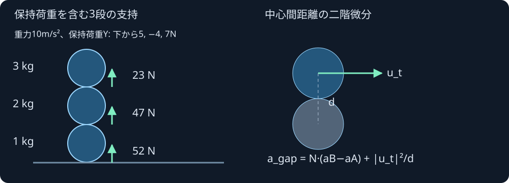

接触を支える反力を求める
球や球の積み重ねを支える法線反力を、保持された荷重と接触の運動学から計算します。反復の終了だけで成功にせず、加速度と相補条件の残差も調べます。
これは現在姿勢の読み取り専用照会です。位置・速度・角運動量・荷重・時刻を変えません。摩擦支持や接触を維持した時間積分は、このラボでは行いません。図の矢印は支持反力の表示で、球が動いた結果ではありません。
計算核を読込み中…
現在姿勢と法線反力
右手系・+Y上、位置m。矢印は各球に働く法線反力の合計です。表示倍率は毎回調整し、矢印長をmや実速度として扱いません。透視図や接触点の測定画像ではありません。
—
—
—
接触の候補と包含区間
—
失敗時にも途中の候補を診断として表示する場合があります。success=falseのλや加速度を、支持解として適用しません。
—
完全入力・照会結果・前後状態のJSON
結果なし
重さだけでなく、運動学も含める

3段積みの質量は下から1、2、3kg、重力は10m/s²、Y方向の保持荷重は5、−4、7Nです。接触の反力は床から52N、球同士は47Nと23Nになり、球の並進加速度が釣り合います。
球対の中心間距離dの二階微分には、相対接線速度による |u_t|²/d が入ります。回転する球上の特定の物質点の向心加速度とは別です。球と平面の法線支持へ rω² を加えたり差し引いたりしません。法線力が中心線を通る球proxyでは、中心回りの法線トルクは0です。
法線反力λと法線加速度a_nについて、restでは λ≧0、a_n≧0、λa_n=0を目標に解きます。離反中はλ=0で、内向きの加速度と共存できます。持続する運動や再接触は後続の時間積分で扱う必要があります。